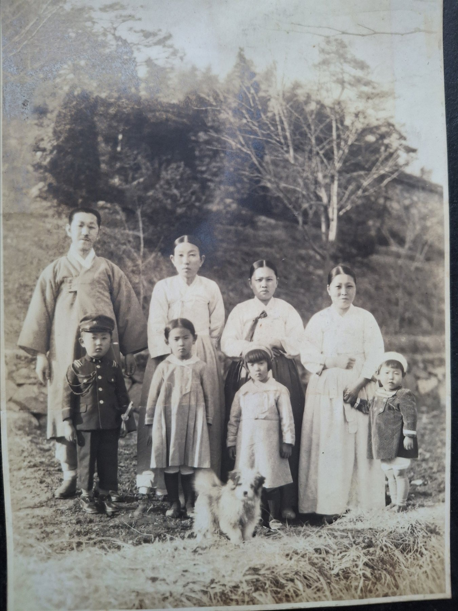
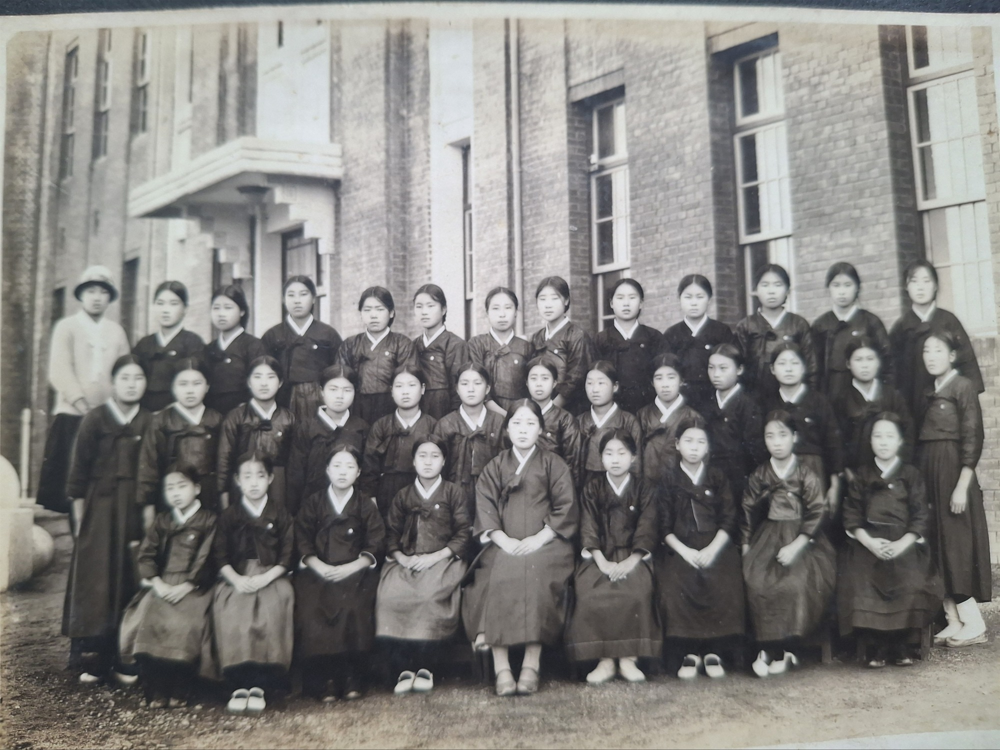

신문란 — 1930년 무렵, 학교를 떠난 며느리
함평 이동범가, 128년의 인연 | 제8편
지난 7편에서는 「光明」 휘호에 이름이 남은 할아버지, 이상래 선생을 소개했습니다. 이번에는 할아버지의 아내이자 저희 할머니, 신문란(申文蘭, 1912~2005) 여사의 이야기입니다.
석암 이동범 선생에게는 손자며느리가 되는 분입니다. 종가로 시집와 오랫동안 집안을 지켜 오셨지만, 그보다 앞서 광주의 여학교에 다니던 학생이기도 했습니다.
1. 종가의 며느리

할머니는 1912년에 태어나 열여섯 무렵이던 1928년에 이상래 선생과 혼례를 올리신 것으로 집안에 전합니다. 전통 혼례복 차림으로 나란히 선 두 분의 사진이 지금도 남아 있습니다.
종가의 며느리로서의 자리는 이재승 선생의 가족사진에서도 확인됩니다. 시부모 곁에 동서와 함께 선 할머니의 모습이 담긴 사진으로, 1930년대 무렵에 찍은 것으로 보입니다.

2. 광주여고보의 학생
집안에는 할머니가 광주공립여자고등보통학교, 줄여서 광주여고보의 제2회 학생이었다는 이야기가 전합니다. 혼례를 올린 뒤에도 광주에서 학업을 이어 가셨다는 것입니다. 다만 재학 기수와 기간은 학적 원부를 확인하기 전까지 전승으로 남겨 둡니다.

집안에는 서울 탑골공원의 석탑 앞에서 찍은 할머니의 독사진도 한 장 전합니다. 1920년대 말 무렵으로 보이는 이 사진 속 할머니는 한복 차림에 허리에 손을 얹고 당당하게 서 계십니다.

사실 이 사진은 지금 이 블로그의 프로필 사진이기도 합니다. 허리에 손을 얹고 선 할머니의 모습에서 단단한 고집이 엿보이는데, 손녀인 저도 그 고집만큼은 꼭 닮은 것 같아 골랐습니다.
3. 1929년 가을, 광주
1929년 10월 말 나주역에서 일본인 남학생들이 조선인 여학생들을 희롱한 일이 벌어졌고, 이 충돌은 11월 3일 광주 시내의 대규모 학생 시위로 번졌습니다. 광주학생독립운동의 시작입니다.
광주여고보 학생들도 이 운동에 참여했고, 이듬해 1월 학교는 많은 학생을 퇴학시켰습니다. 1930년 1월 20일 『조선일보』는 40여 명의 퇴학 소식을 전하며, 학교가 부형을 불러 자퇴원을 내도록 권하기도 했다고 적고 있습니다.
할머니가 학교를 떠난 것도 이 무렵이라고 집안에 전합니다. 정확한 자퇴 연도와 날짜는 아직 확인되지 않았습니다. 학교장이 시아버지인 이재승 선생에게 직접 연락해 자퇴를 요구했고, 며느리의 처지에서 그 뜻을 거스르기 어려웠던 할머니는 결국 학업을 그만두셨다는 이야기입니다.
집안에는 나주역 사건에 연루된 여학생이 할머니와 같은 학년 동기이자 친구였다는 이야기가 전합니다. 다만 그 여학생이 누구였는지와 두 분의 관계는 아직 기록으로 확인하지 못했습니다.
4. 같은 학교의 시누이, 이옥
같은 시기 광주여고보에는 이상래 선생의 여동생이자 신문란 할머니의 시누이로 전해지는 이옥(李玉, 1914~2000) 선생도 재학했습니다. 이옥 선생은 광주학생독립운동 관련 공적으로 2022년 대통령표창을 받았으며, 퇴학 경위와 관련 기록은 번외편에서 따로 살펴보겠습니다.

5. 남은 질문들
할머니는 2005년, 아흔셋의 나이로 세상을 떠나셨습니다. 이 글의 생몰년은 제적등본과 유족의 자료를 기준으로 했습니다.
정리하면서 앞으로 확인할 질문도 분명해졌습니다. 광주여고보 학적 원부에 남은 할머니의 재학 기간과 자퇴 날짜, 학교장이 집안에 연락한 경위, 나주역 사건 친구의 이름, 그리고 이옥 선생과의 가족관계에 대한 공식 대조입니다.
집안의 이야기가 기록으로 확인될 때까지, 전승은 전승대로 분명히 구분해 적어 두려 합니다.
다음 편에서는 할아버지와 할머니, 두 분이 함께 지나온 시간의 이야기를 이어 가겠습니다.
백범김구기념관 공식 인터뷰
https://www.youtube.com/watch?v=a9RnCcFLhq8
함께 보기
- 전체 기록 아카이브 https://lsaru23-ai.github.io/hp-db-archive/
- X @hp_db_archive https://x.com/hp_db_archive
- Threads @hp_db_archive https://www.threads.com/@hp_db_archive
지난 글
- 제1편: ‘이 진사’는 누구였나 — 백범 김구와 함평 이동범가
- 제2편: 보름을 머문 이유 — 1898년, 함평의 은신
- 제3편: 1946년 재회와 光明 — 김구가 다시 찾은 인연
- 제4편: 종가와 이재혁 가옥 — 두 집에 남은 128년
- 제5편: 석암 이동범 — ‘이 진사’의 생애
- 제6편: 춘강 이재승 — 종가를 이은 장남
- 제7편: 이상래 — 「光明」에 이름이 남은 손자
주요 참고자료
[1] 『조선일보』, 1930년 1월 20일, 「광주여고보생 다수 퇴학처분, 40여 명을 퇴학처분」.
[2] 국가보훈처 보도자료, 「제83회 순국선열의 날」 독립유공자 포상, 2022. 11. 15, 19~21쪽(이옥).
[3] 윤선자, 「광주여자고등보통학교 학생들의 광주학생독립운동 참여」, 호남사학회 학술대회 자료집, 2022.
[4] 이상래·신문란 혼례 사진, 광주여고보 단체 사진 등 가족 소장 사진.
[5] 제적등본 및 『함평이씨대동보』.
이 글은 문헌에서 직접 확인되는 사실과 집안의 전승을 구분해 작성했습니다. 할머니의 재학과 자퇴 경위는 가족 전승이며, 학적 기록 확인에 따라 보완할 예정입니다.